375 × 812 logical viewport；production disabled。视觉证据已完成，用户视觉批准仍为 pending。
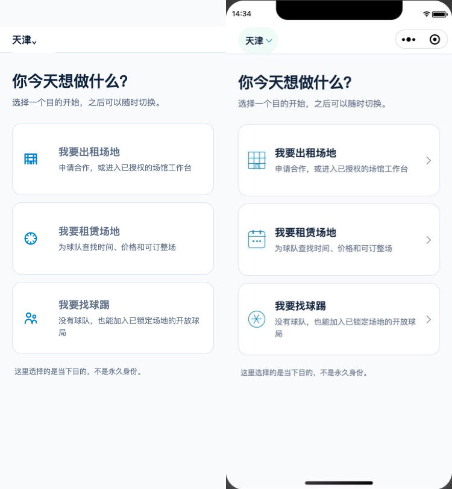
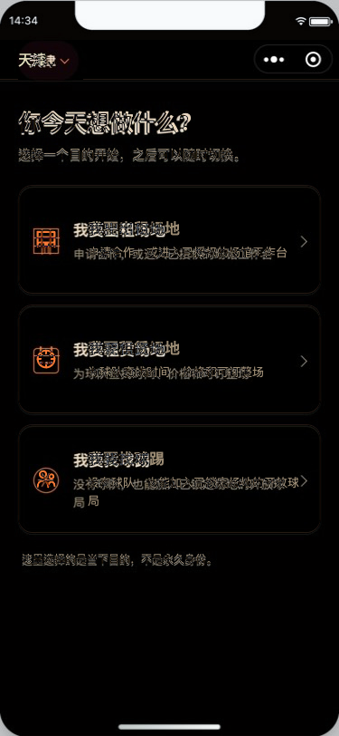
| composition | 三个等权入口与 reference 一致；implementation 呈现真实状态栏、胶囊和 Home indicator。 |
|---|---|
| geometry/spacing | 左右边距和卡片外框接近；implementation 的图标—文案间距更紧。 |
| component hierarchy | 标题、说明、入口卡片和身份提示层级一致。 |
| typography/color/material | 原生字体渲染略有差异；海军蓝、浅灰和白卡材质一致。 |
| icon assets | 语义一致，implementation 使用更大的线性图标。 |
| copy | 三个入口标题、说明与“不是永久身份”一致。 |
| state semantics | 天津为当前城市；三个目的均为同一账号下的当下选择。 |
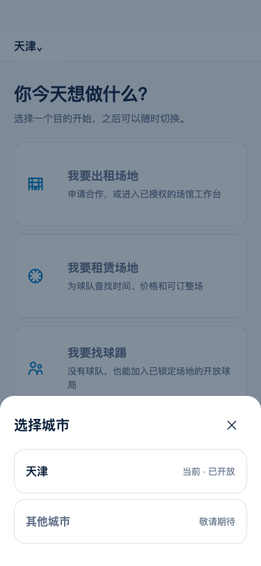
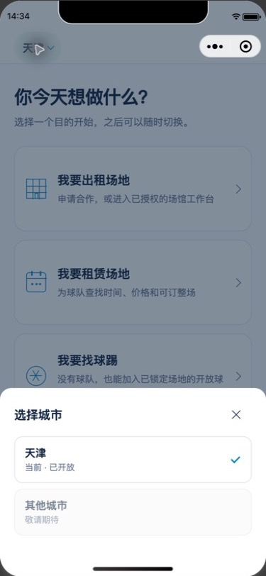
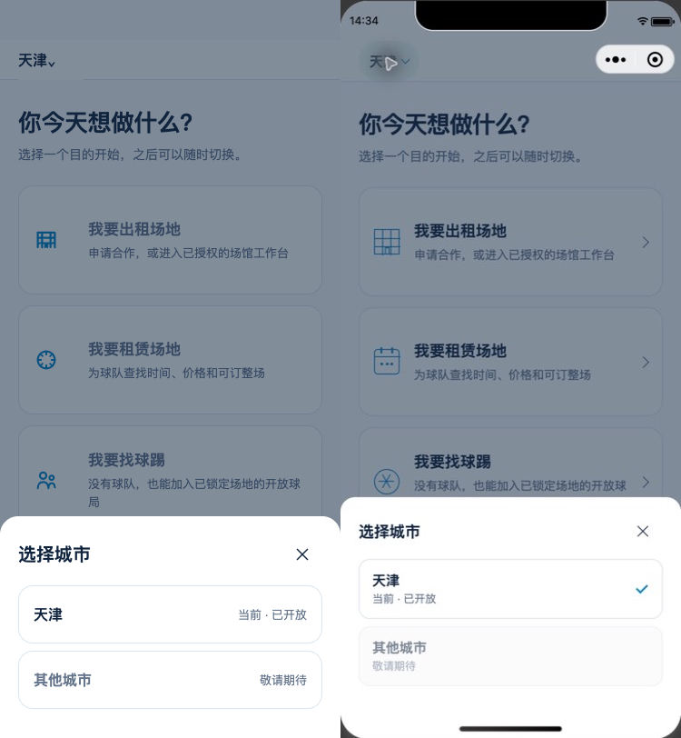
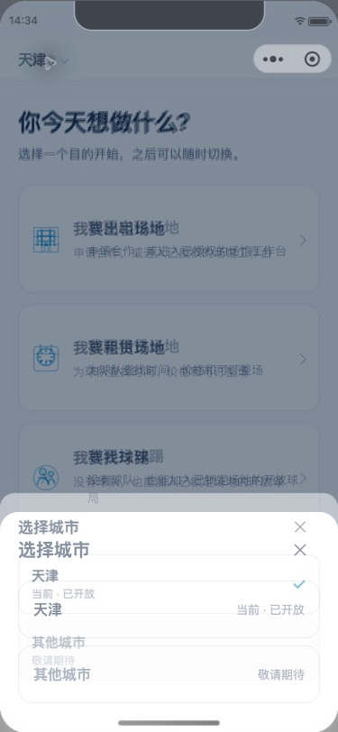
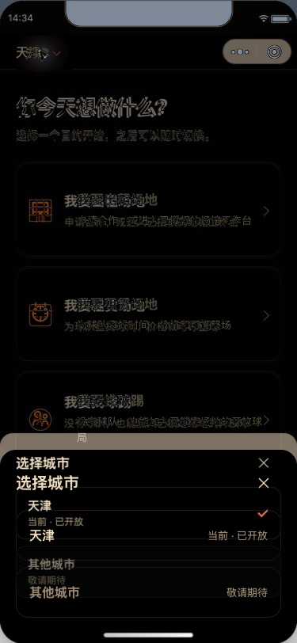
| composition | 背景层级和底部面板结构一致；implementation 面板顶边约高 20px。 |
|---|---|
| geometry/spacing | implementation 将城市状态置于名称下方，因此面板更高。 |
| component hierarchy | scrim、sheet、关闭、当前城市和禁用城市层级一致。 |
| typography/color/material | implementation scrim 略深；白色圆角面板与禁用灰阶一致。 |
| icon assets | 关闭和勾选图标语义一致。 |
| copy | “选择城市”“当前 · 已开放”“其他城市”“敬请期待”一致。 |
| state semantics | 天津可关闭面板；其他城市禁用，未触发定位或导航。 |
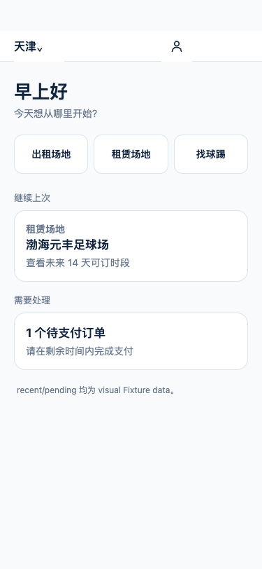
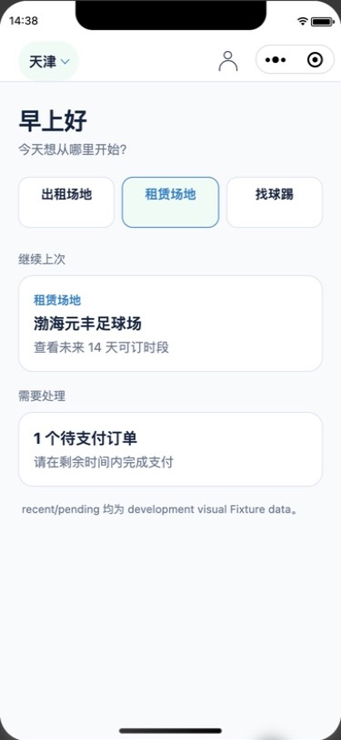
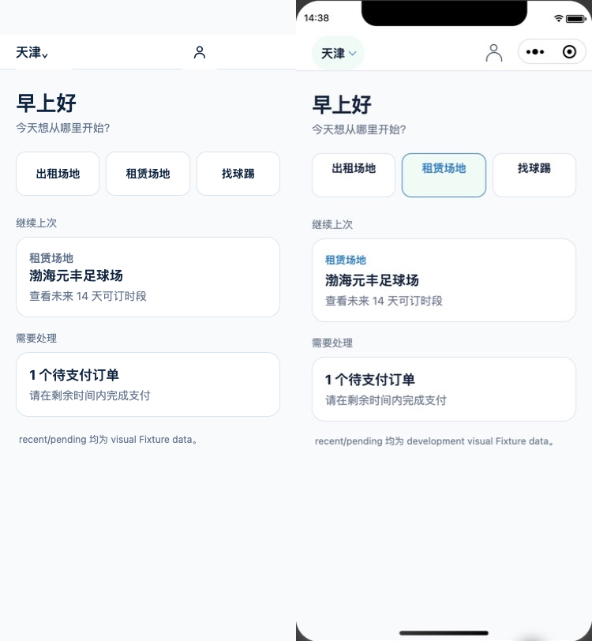
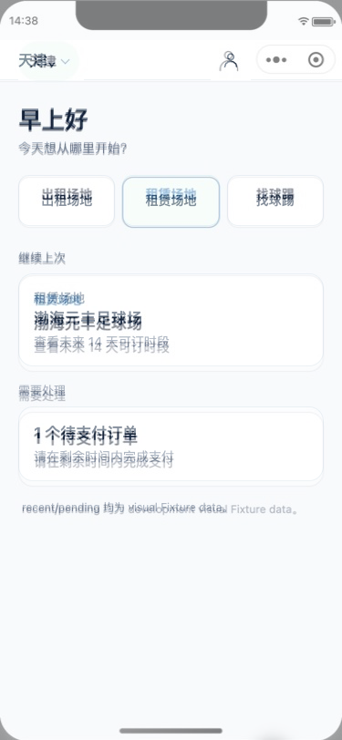
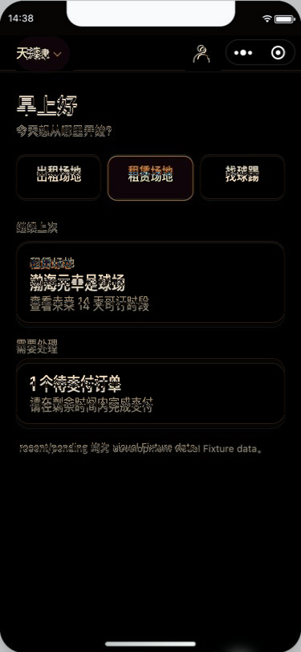
| composition | 问候、三入口、继续上次和待处理顺序一致；implementation 呈现真实系统栏。 |
|---|---|
| geometry/spacing | 主体间距接近；BOOK 选中态增强了中间入口的视觉面积。 |
| component hierarchy | 问候为主标题，快捷入口其次，后续任务层级清楚。 |
| typography/color/material | 色彩基线一致；implementation 的 BOOK 为浅绿底和蓝色边框。 |
| icon assets | “我的”为线性用户图标；卡片无多余装饰。 |
| copy | 主要文案一致；implementation 明确写为 development visual Fixture data。 |
| state semantics | intent=BOOK 被结构化显示为租赁场地选中态；production 仍 disabled。 |